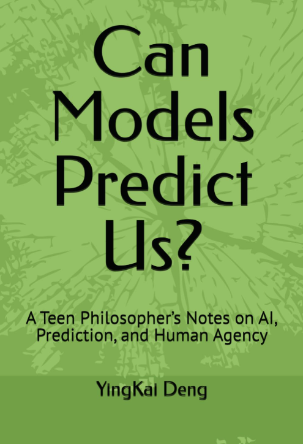
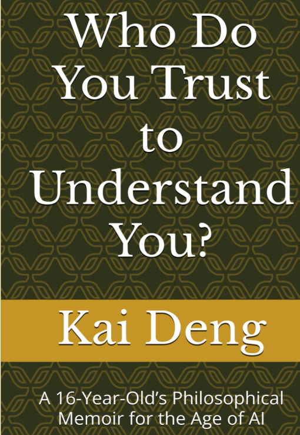

Research the problem
Briefs explain why AI tutoring should be evaluated by student reasoning, not just answer accuracy, speed, or satisfaction.
Student-led research · AI tutoring · student reasoning
AI Learning Trust Lab is a student-led research initiative studying how AI tutoring affects reasoning, trust, overreliance, and student agency.
What this lab does
Briefs explain why AI tutoring should be evaluated by student reasoning, not just answer accuracy, speed, or satisfaction.
The lab develops a Trustworthy Explanation Rubric and a verifier prototype direction for checking tutoring explanations before students rely on them.
The survey and mini reports are designed to capture how students actually use AI, when it helps, and when it creates dependence.
Core problem
Students may receive a correct answer without understanding the reasoning.
A response can feel helpful while quietly reducing the student’s effort to think.
This lab studies the gap between answer accuracy and student judgment.
Evidence behind the lab
The lab brings together prior work on student behavior, AI interaction style, verifier-mediated AI, and reflective feedback.
Narrative decision simulation · 66 high school participants
Shows that learning behavior unfolds through sequences of micro-decisions before failure becomes visible.
What it is: A student decision simulation studying how high school students make small choices under academic pressure.
What it showed: Learning breakdown often begins before visible failure, through hesitation, avoidance, shortcut-seeking, and small decisions that accumulate.
Why it matters: AI tutoring does not only affect final answers. It affects the micro-decisions students make while learning.
Passive, proactive, and collaborative ChatGPT-4o support
Shows that how AI responds can shape user experience and performance, not just what the answer says.
What it is: A study comparing different ways an AI assistant can interact with students, from passive answering to more collaborative support.
What it showed: Interaction style changes how students experience AI help and how they perform with it.
Why it matters: AI tutoring should be evaluated by how it shapes student thinking, not only by whether the content is correct.
CounterRefine · factual QA repair
Shows that model answers can be treated as hypotheses to verify, revise, and check against contradiction.
What it is: CounterRefine treats an AI answer as something to be checked, not immediately trusted.
What it showed: Evidence can be used to decide whether an answer should be kept, revised, or challenged.
Why it matters: AI Learning Trust Lab extends this idea from factual QA to tutoring: before students rely on an explanation, it should be checked for accuracy, transparency, and reasoning support.
Patent-pending related invention
Shows how systems can support reflection and awareness without forcing compliance or defining identity.
What it is: A related invention exploring how systems can respond to patterns in user behavior and reflection.
What it showed: Feedback can guide attention without forcing action or defining the user by a single score.
Why it matters: AI tutoring should guide students through learning friction while preserving agency and avoiding fixed labels.
Project status
Shows how AI answers can be verified and revised before users rely on them.
Shows that how an AI responds can shape user experience, performance, and trust.
Gives teachers and students language for evaluating AI explanations beyond correctness.
Translates the lab’s research question into clear writing for students, teachers, and education leaders.
Collects student evidence on when AI supports thinking and when it encourages overreliance.
Applies verifier research to AI tutoring by checking explanation quality, uncertainty, and reasoning support before students rely on an answer.
Featured briefs
These essays translate the lab’s research question into short, readable pieces for students, teachers, and education leaders.
Brief 1
AI tutoring should be judged by what happens to student reasoning after the answer appears.
Open article →Brief 2
Tone, fluency, and emotional resonance can make an AI explanation feel trustworthy before it is actually evaluated.
Open article →Brief 3
A trustworthy explanation is accurate, transparent, scaffolded, and designed to preserve student agency.
Open article →Brief 4
The deepest risk is that students may stop practicing the judgment that learning is supposed to build.
Open article →Brief 5
A verifier can treat the tutor’s first answer as a draft to be checked, not a final authority.
Open article →Brief 6
When systems constantly mirror students, they may reduce the friction that judgment needs.
Open article →Intellectual foundation
Kai’s writing projects explore how people decide what to trust in an age of AI. They are included here as background, not as the main output of the lab.

Book · AI prediction and human agency
A short philosophical book on when models can predict behavior, why prediction changes the systems it enters, and why human agency cannot be reduced to behavioral patterns.

Book · AI trust and emotional understanding
A philosophical memoir on AI, emotional trust, and the feeling of being understood in an age of fluent systems.
For AI tutoring: behavior patterns can guide support, but they cannot replace the student’s own explanation, confusion, or judgment.
For AI tutoring: warm tone and personalization can make help feel trustworthy, so the tutor still needs verification and student reasoning checks.
For AI tutoring: feedback should describe moments of learning friction, not define a student as dependent, low-motivation, or weak.
Trustworthy Explanation Rubric
A strong AI tutoring explanation is not only correct. It helps the student reason, preserves agency, acknowledges uncertainty, and reduces overreliance.
Founder
Ying Kai Deng is a high school student researcher working at the intersection of trustworthy AI, education, and human reasoning. AI Learning Trust Lab brings together his technical research, writing, and public education work around a single question: whether AI tutoring protects student thinking.